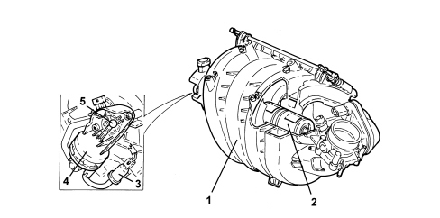
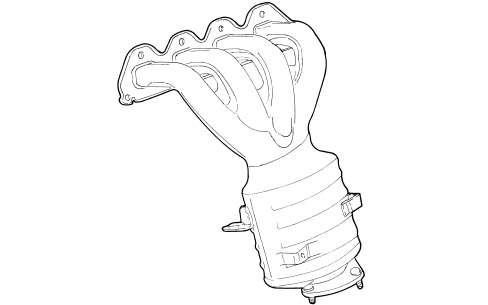

INTRODUCTION - INTAKE AND EXHAUST MANIFOLDS
- Path
- Descriptions > 10 ENGINE > 1072 INLET AND EXHAUST MANIFOLDS > INTRODUCTION - INTAKE AND EXHAUST MANIFOLDS
- Kind
- system description
- Applies to
- engines: 1.8; all production periods
- Interactive page
- https://sloeber94.github.io/elrnDB-fCrm/en/#/194002264
Applies to: engines: 1.8; all production periods
INLET MANIFOLD
The engine has a two stage modular intake manifold made from plastic.
Depending on the operating conditions, the intake air is directed via two different length intake routes. The switch from one intake route to the other takes place at high engine loads and at engine speeds of between 1500 and 4200 rpm through the rotation of a roller switch (2) incorporated in the intake manifold. The use of a roller switch for controlling the intake manifolds involves considerable advantages compared with the usual turbulence valves. In this way, for example, the switching resistances at very high speeds in the plastic intake module are considerably reduced and there is a very good seal in the intake manifolds when closed.
The air is introduced into the intake manifold via the throttle body at the side of the actual manifold.
This position allows the optimum arrangement of the ducts for the individual arms of the intake manifolds with a reduction in load leaks in the section from the air filter to the intake valves. In this way it has also been possible to keep the section of the pipes constant for the entire length of the intake section.
The engine management control unit sends a signal to the normally closed electromagnetic valve (1); the latter, on opening, allows the flow of the vacuum from the intake manifold to the actuator (2) which operates the shaft (3) which controls the roller switch.

1. Modular intake manifold
2. Roller switch
3. Electropneumatic valve
4. Pneumatic actuator
5. Roller switch control shaft
EXHAUST MANIFOLD
Made from pressed steel it incorporates the catalytic converter for controlling exhaust emissions.
The special 4 in 1 structure allows the even distribution of the exhaust gases at the catalytic converter inlet where the Lambda sensor is found.
The oscillations of the exhaust manifold are opposed by a special bracket fastened to the engine block.
